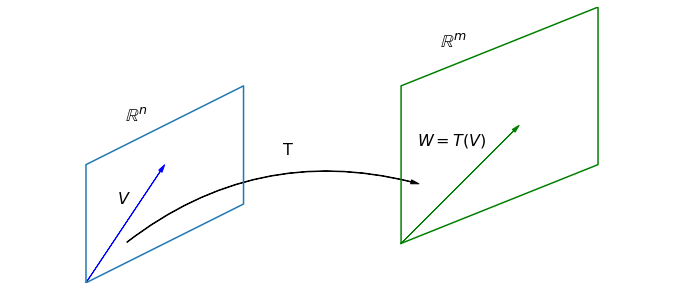

Linear Transformations#
In this chapter the focus shifts from solving linear systems to the use of matrix algebra to represent maps between vector spaces. We will see that certain class of useful maps called linear transformations can be described with matrix multiplication.
A mapping between vector spaces is a rule that associates input vectors with output vectors. We say that the input vectors get “mapped” to the output vectors. The input and output vectors may be in different spaces, or they may be in the same space. There may be multiple input vectors that get mapped to a single output vector, but it is important that each input vector gets mapped to a unique output vector. In the language of calculus, mappings are known as functions.
When we refer to a specific map, we might use a symbol, such as \(T\). In order to specify which spaces contain the input and output vectors, say \(\mathbb{R}^2\) and \(\mathbb{R}^3\), we write \(T: \mathbb{R}^2 \to \mathbb{R}^3\). This notation means that \(T\) is a mapping that takes vectors in \(\mathbb{R}^2\) as inputs, and maps them to vectors in \(\mathbb{R}^3\). When we refer to the output associated with a specific vector, say \(V\), we use the notation \(T(V)\). (This notation is read “\(T\) of \(V\)”. The reader familiar with calculus will recognize the notation as that commonly used with functions.). Finally, if we wish to label the output vector as \(W\), we will write \(T(V)=W\), meaning that the input vector \(V\) gets mapped to the output vector \(W\) by the map \(T\). The vector \(W\) is said to be the image of \(V\) under the map \(T\). Similarly, the vector \(V\) is said to be the preimage of \(W\).

Example 1: Transformation from \(\mathbb{R}^2\) to \(\mathbb{R}^3\)#
A Python function that accepts one vector as an argument, and provides one vector in return, is a perfect model of a mapping. As an example, let’s write a function that accepts a vector from \(\mathbb{R}^2\) and returns a vector in \(\mathbb{R}^3\).
import numpy as np
def T(V):
W = np.zeros((3,1))
W[0,0] = 2*V[0,0]
W[2,0] = V[1,0]
return W
V = np.array([[3],[5]])
W = T(V)
print(V,'\n\n',W)
[[3]
[5]]
[[6.]
[0.]
[5.]]
We can describe this mapping \(T:\mathbb{R}^2 \to \mathbb{R}^3\) with the following symbolic formula.
Linearity#
A map \(T\) is said to be linear if the following two properties are true for any scalar \(k\), and any input vectors \(U\) and \(V\).
\(T(kV)\) = \(kT(V)\)
\(T(U + V)\) = \(T(U) + T(V)\)
A linear map is referred to as a linear transformation.
The map \(T\) in Example 1 is a linear transformation.
If we choose specific vectors \(U\) and \(V\), and a specific scalar \(k\), we can compute the left and right sides of these equations with syntax that matches the notation
U = np.array([[-1],[3]])
V = np.array([[3],[5]])
k = 7
print(T(k*V),'\n')
print(k*T(V),'\n')
print(T(U+V),'\n')
print(T(U)+T(V))
[[42.]
[ 0.]
[35.]]
[[42.]
[ 0.]
[35.]]
[[4.]
[0.]
[8.]]
[[4.]
[0.]
[8.]]
Showing these equations hold for a specific choice of \(U\), \(V\), and \(k\) does not prove that the transformation is linear. Even if we were to run this code inside a loop and see that the equations held for a million random combinations of \(U\), \(V\), and \(k\), that would still not prove that the transformation is linear. It would however provide numerical evidence to support the claim.
Example 2: Transformation defined as matrix multiplication#
Let \(L:\mathbb{R}^3 \to \mathbb{R}^3\) be defined by \(L(X)= AX\) where \(A\) is the following matrix.
Since matrix multiplication is linear, a transformation defined by matrix multiplication is linear as well. If \(X\) and \(Y\) are any vectors in \(\mathbb{R}^3\), and \(k\) is any scalar, then \(L(X+Y) = A(X+Y) = AX + AY = L(X) + L(Y)\) and \(L(kX) = A(kX) = k(AX) = kL(X)\). We define a function for this transformation as well.
def L(V):
A = np.array([[1,1,0],[1,0,2],[3,1,-1]])
W = A@V
return W
V = np.array([[1],[3],[5]])
W = T(V)
print(V,'\n\n',W)
[[1]
[3]
[5]]
[[2.]
[0.]
[3.]]
Example 3: Transformation from \(\mathbb{P}^3\) to \(\mathbb{P}^5\)#
In this final example we consider a transformation between vector spaces of polynomials. We can define a linear transformation \(M:\mathbb{P}_3\to\mathbb{P}_5\) by multiplying by some fixed quadratic polynomial, say \(x^2 + 2\). Let’s write out the formula for \(M\) by calculating \(M(P)\) for an arbitrary \(P = a_3x^3 + a_2x^2 + a_1x + a_0\).
This transformation must be linear by the algebraic rules for multiplication. If \(P\) and \(Q\) are any polynomials in \(\mathbb{P}^3\) and \(k\) is any scalar, we know that \(M(P+Q) = (x^2+2)(P+Q) = (x^2+2)P + (x^2+2)Q = M(P) + M(Q)\), and \(M(kP) = (x^2+2)(kP) = k[(x^2+2)P] = kM(P)\).
Compositions#
If two transformations are to be applied, one after the other, it is common to combine them to form what is known as a composition. This idea only makes sense when the output space of the first transformation matches the input space of the second. In symbols, if \(T:\mathbb{U}\to\mathbb{V}\) and \(L:\mathbb{V}\to\mathbb{W}\), then we could consider the composition \(L\circ T:\mathbb{U}\to\mathbb{W}\). The notation \(L\circ T\) represents the composition formed by applying the map \(T\), followed by the map \(L\).
As an example, if we take \(T:\mathbb{R}^2 \to \mathbb{R}^3\) and \(L:\mathbb{R}^3 \to \mathbb{R}^3\) to be the transformations defined in Example 2 and Example 3, we could define \(L\circ T:\mathbb{R}^2 \to \mathbb{R}^3\).
We can calculate outputs from this transformation by calling the functions we defined earlier in the appropriate order, using the output from \(T\) as the input to \(L\).
V = np.array([[3],[5]])
composition_output = L(T(V))
print(composition_output)
[[ 6.]
[16.]
[13.]]
Invertibility#
When applying a given linear transformation, we often consider if it is possible to reverse the transformation. That is, we would like to know if it is possible to map all the vectors in the output space back to vectors in the input space such that images get sent back to their preimages. If this is possible we say that the transformation is invertible. More formally, a linear transformation \(L:\mathbb{V}\to\mathbb{W}\) is said to be invertible if there exists another transformation \(L^{-1}:\mathbb{W}\to\mathbb{V}\), known as the inverse, such that \((L^{-1}\circ L)(X) = X\) for any vector \(X\) in \(\mathbb{V}\).
The transformation \(L\) in Example 2 is invertible since the matrix \(A\) is invertible. If \(X\) is any vector in \(\mathbb{R}^3\) and \(Y=AX\) is the image vector of \(X\), it is possible to find \(X\) given \(Y\) by using \(X=A^{-1}Y\).
import laguide as lag
def L_inverse(V):
A = np.array([[1,1,0],[1,0,2],[3,1,-1]])
A_inverse = lag.Inverse(A)
W = A_inverse@V
return W
V = np.array([[1],[3],[5]])
print(L(V),'\n')
print(L_inverse(L(V)))
[[ 4]
[11]
[ 1]]
[[1.]
[3.]
[5.]]
Note that we don’t necessarily need to compute \(A^{-1}\), we just need to be able to solve \(AX=Y\) for any \(Y\) in \(\mathbb{R}^3\).
The transformation \(T\) in Example 1 is not invertible since there will be no way to define \(T^{-1}\) for vectors in \(\mathbb{R}^3\) that have nonzero middle entry. In the next section, we will discuss a method for determining which transformations are invertible by representing them as matrix multiplications.
Exercises#
Exercise 1: Find the vector \(T(V)\) where
## Code solution here.
Exercise 2: Find the vector \(U\) so that
## Code solution here.
Exercise 3: Write a Python function that implements the transformation \(N:\mathbb{R}^3\to\mathbb{R}^2\), given by the following rule. Use the function to find evidence that \(N\) is not linear.
## Code solution here.
Exercise 4: Consider the two transformations, \(S\) and \(R\), defined below. Write a Python function that implements the composition \(R\circ S\). Explain why it is not possible to form the composition \(S \circ R\).
## Code solution here.
Exercise 5: Create a Python function which implements the transformation: \(S:\mathbb{R}^3\to\mathbb{R}^3\), given below. Use the function to provide evidence whether the transformation is linear or not.
Repeat for the transformation \(T:\mathbb{R}^3\to\mathbb{R}^3\) is now defined by
## Code solution here
Exercise 6: \(L:\mathbb{R}^3\to\mathbb{R}^2\) is a Linear Transformation . Find \(L(kU+V)\) given that \(k=7\),
## Code solution here
Exercise 7: Let \(T:\mathbb{R}^3 \to \mathbb{R}^2\) be defined by \(T(X)= AX\), where
Find all vectors \(X\) that satisfy \(T(X) = \left[\begin{array}{r} 1 \\ 2 \end{array} \right] \).
## Code solution here
Exercise 8: Let \(M:\mathbb{P}_1 \to \mathbb{P}_3\) be a transformation defined by \(M(p(x)) = x^3 + p(x)\). Determine whether \(M\) is linear or not.
## Code solution here
Exercise 9: Let \(S:\mathbb{P}_2 \to \mathbb{P}_3\) and \(T:\mathbb{P}_3 \to \mathbb{P}_5\) be two linear transformations defined by the rules given below. Define the composition \(T\circ S\) and determine whether it is linear or not. Explain why \(S\circ T\) is not defined.
\(S(p(x)) = x(p(x))\)
\(T(q(x)) = x^2(q(x))\)
where \(p(x)\) is a polynomial in \(\mathbb{P}_2\) and \(q(x)\) is a polynomial in \(\mathbb{P}_3\).
## Code solution here